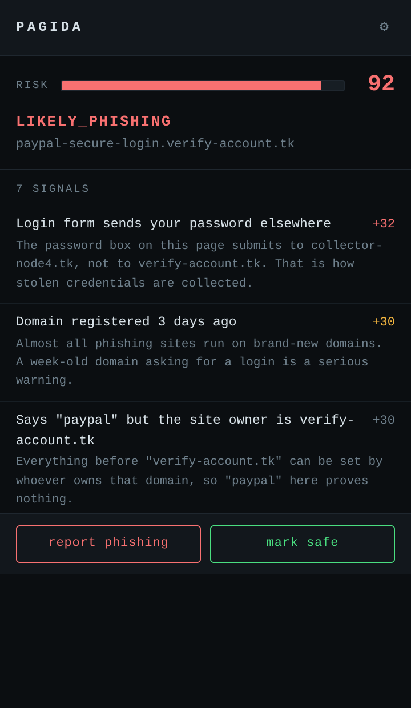
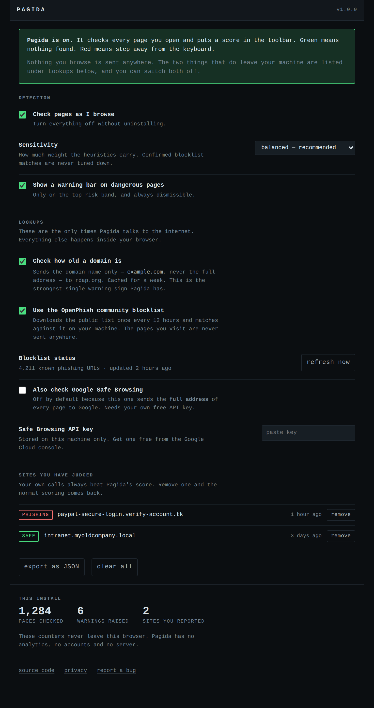
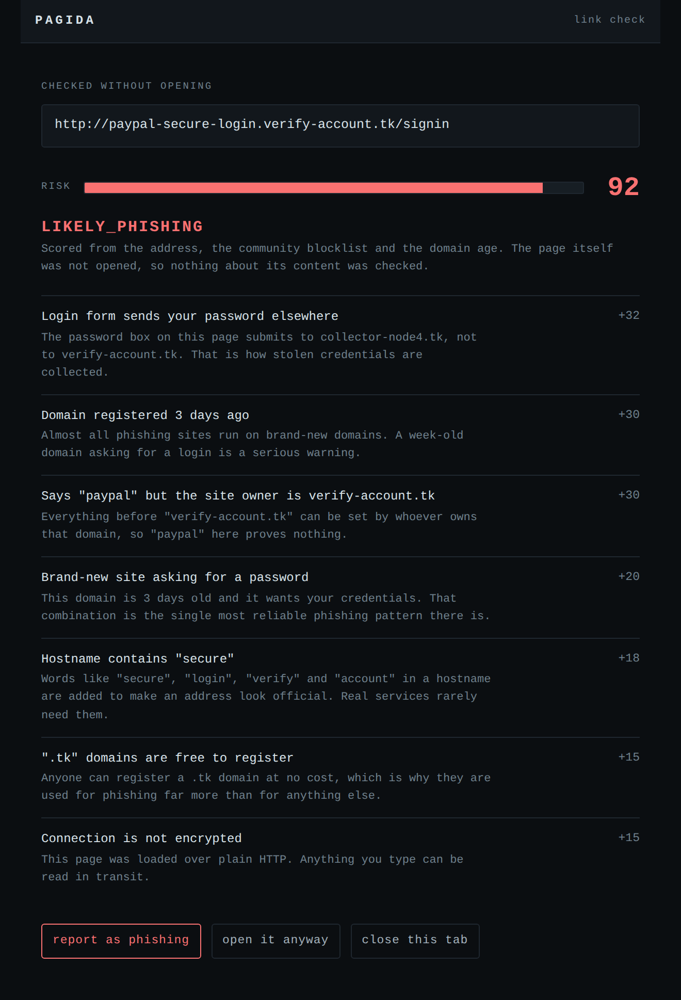

παγίδα — Greek for "trap"
A phishing detector for Chrome that shows its working. Every page gets a risk score out of 100, and every point of that score traces back to a warning sign you can read for yourself.

Most phishing tools hand you a colour. Pagida hands you the reasoning, in the same words you would use to explain it to someone else.
You can disagree with it. You can learn from it. Both are worth more than a number.
The repository ships an evaluation harness you can run yourself. It scores today's confirmed-phishing feed against 2,000 legitimate sites and 40 real brand login pages, using the same engine the extension runs.
At the band where Pagida escalates its badge. Two false positives across 2,040 legitimate URLs.
At the flagging band, from the address alone — no page content, no blocklist.
Across 40 real brand login URLs: PayPal, myGov, CommBank, Microsoft, AWS.
| Band | Threshold | Precision | Recall | What happens |
|---|---|---|---|---|
| WORTH_A_LOOK | ≥15 | 94.5% | 62.7% | Small badge |
| SUSPICIOUS | ≥30 | 97.8% | 30.3% | Escalated badge |
| LIKELY_PHISHING | ≥55 | 100% | 2.3% | Warning bar on the page |
Only the top band interrupts you, and it is set where address heuristics alone effectively cannot reach it — a warning that fires on one site in forty is a warning people learn to click through.
Two optional lookups, both switchable off, neither carrying a page you visited.
example.com, never the path or query string — to find out how old it is. Cached for a week.No analytics, no account, no server, no sync, no telemetry. The extension does not request the tabs permission and cannot read your history.

Report a site as phishing and Pagida warns you about it from then on. Mark one as safe and it stops scoring it entirely. Right-click any link to check it without opening it.

git clone https://github.com/AryanDhingraa/pagida.git
cd pagida
npm install
npm run buildOpen chrome://extensions, turn on Developer mode, click Load unpacked, and select the dist folder. Chrome Web Store listing is in review.